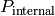
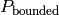
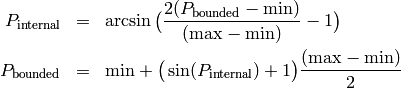
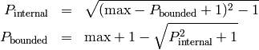
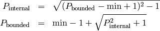
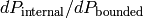

This section describes the implementation of Parameter bounds. The MINPACK-1 implementation used in scipy.optimize.leastsq for the Levenberg-Marquardt algorithm does not explicitly support bounds on parameters, and expects to be able to fully explore the available range of values for any Parameter. Simply placing hard constraints (that is, resetting the value when it exceeds the desired bounds) prevents the algorithm from determining the partial derivatives, and leads to unstable results.
Instead of placing such hard constraints, bounded parameters are mathematically transformed using the formulation devised (and documented) for MINUIT. This is implemented following (and borrowing heavily from) the leastsqbound from J. J. Helmus. Parameter values are mapped from internally used, freely variable values  to bounded parameters . When both min and max bounds are specified, the mapping is

With only an upper limit max supplied, but min left unbounded, the mapping is:

With only a lower limit min supplied, but max left unbounded, the mapping is:

With these mappings, the value for the bounded Parameter cannot exceed the specified bounds, though the internally varied value can be freely varied.
It bears repeating that code from leastsqbound was adopted to implement the transformation described above. The challenging part (Thanks again to Jonathan J. Helmus!) here is to re-transform the covariance matrix so that the uncertainties can be estimated for bounded Parameters. This is included by using the derivate  from the equations above to re-scale the Jacobin matrix before constructing the covariance matrix from it. Tests show that this re-scaling of the covariance matrix works quite well, and that uncertainties estimated for bounded are quite reasonable. Of course, if the best fit value is very close to a boundary, the derivative estimated uncertainty and correlations for that parameter may not be reliable.
The MINUIT documentation recommends caution in using bounds. Setting bounds can certainly increase the number of function evaluations (and so computation time), and in some cases may cause some instabilities, as the range of acceptable parameter values is not fully explored. On the other hand, preliminary tests suggest that using max and min to set clearly outlandish bounds does not greatly affect performance or results.